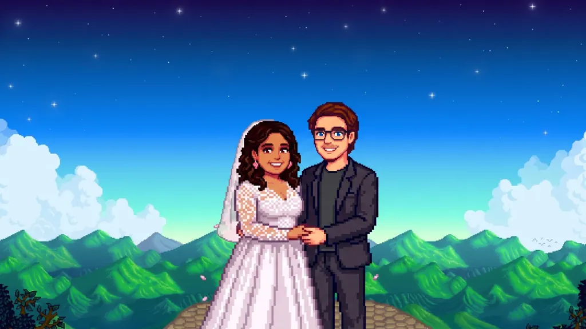

It all started in 2019 with a match and a whole lot of hope. Sarah Torres and Alex Adamczyk found each other on a dating platform, the modern-day love story no one saw coming but everyone secretly roots for. On the drive to meet Sarah for their first date, Alex called her, heard her voice, and spoke to himself in the first person: pay attention. This is the woman I may love one day. They even managed to meet at the wrong place first, but the fix came easy. Sarah was sweet, patient, and so easygoing that finding each other became part of the charm. Their first date was dinner at a sushi restaurant where the rolls come to you on a conveyor belt. Hours flew by, and somewhere between the fifth plate and the "we should probably get the check," it became pretty clear this was something worth showing up for again.
For the second date, Alex decided to turn things up a notch. He called in a favor from a musician friend who was playing a rooftop bar and managed to wrangle himself a spot to sit in on saxophone. Was he a gigging musician? Not exactly. Was Sarah impressed? Absolutely. It was the kind of grand, slightly unhinged romantic gesture that tells you everything you need to know about a person, and Sarah liked what she saw.
Then 2020 happened, and while the world hit pause, Sarah and Alex hit play on something real. Stuck at home like the rest of us, they did what any two people falling in love do: they farmed virtual crops, raised digital chickens, and somehow grew even closer through the magic of Stardew Valley. Nothing says "I think I love you" quite like coordinating a harvest together at 1am.
From those early pandemic evenings, they built a life full of laughter, inside jokes, and the kind of easy, comfortable love that makes everything feel a little lighter.
In September 2025, Alex had a plan. He whisked Sarah away to Jekyll Island, Georgia, and together they boarded a ferry to the wild and breathtaking Cumberland Island. Standing before the hauntingly beautiful Dungeness Ruins, Alex got down on one knee and asked Sarah to be his wife. (She said yes. Obviously.)
Now they're counting down the days to March 6, 2027, and they can't wait to celebrate with the people who mean the most to them.